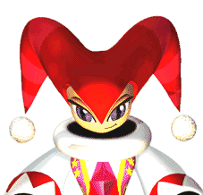

キャラクター紹介

街はもう雪の降る季節です。
ナイツとエリオット達が出会ってもう半年がたちました。
彼等は今、どうしているのでしょうか。


ナイツ
(NiGHTS)
ワイズマンの片腕として誕生したファーストレベルナイトメアン。
ナイトメアン本来のクレイジーさを持ちながら、誰にも従わない自由な性格を持っている。
他のナイトメアンより優れた飛行能力や、体を思い通りに変形させる能力を持つ。
また、ファーストレベルであるナイツはビジターとデュアライズ（同化）することが出来る。
エリオット、クラリスとは以前夢の世界で冒険を繰り広げた仲。

エリオット・エドワーズ
(Elliot Edwards)
ツインシーズのセントラルにすむ１５歳の少年。クールな性格で、
自らが進んで行動したり、人前で感情を出したりしないシティ派である。
ナイツと出会い真の勇気を取り戻し、現在はクラリスと友人関係にある。
クラリス・シンクレア
(Claris Sinclair)
ツインシーズの郊外に住む１５歳の少女。
芸術家の家庭に生まれ育ったため高い感受性を持つ
彼女もまたナイツと出会い真の勇気を取り戻し、
自分の夢に向かって歩んでいる。
エリオットとは良い友人関係にある。
ナイトピアン
(NIGHTOPIAN)
夢の世界ナイトピアの住人。
彼等は相変わらず楽しむ事しか頭にないようだ。
最近はレパートリーを増やそうと歌の練習をしているとの噂。
(c)SEGA 1996
このページはソニックチームが制作しています。

戻る